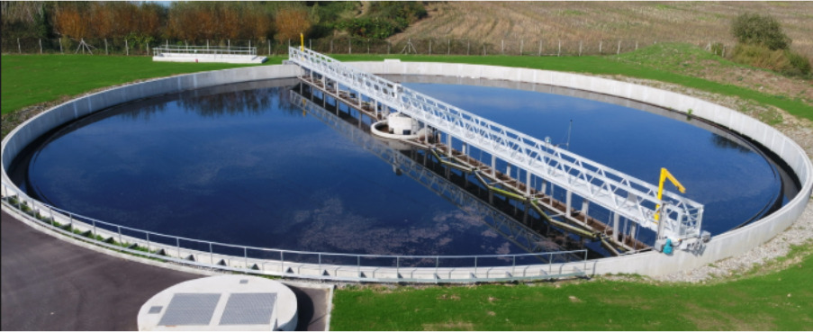
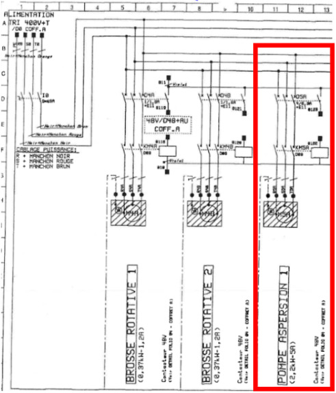

Apprentissage Critique : Proposer une solution de maintenance (AC33.01)
Lors de mon stage à la station d'épuration de Pierre-Bénite (Grand Lyon), j'ai intégré l'équipe de maintenance EIA (Électricité, Instrumentation, Automatisation). J’ai travaillé sur de nombreuses installations électriques pour des opérations de maintenance corrective. L’une d’entre elles concernait un clarificateur : c’est un bassin en forme de cercle dans lequel une plateforme tournante métallique munies de herses pousse des boues vers l'extérieur, tandis qu’une pompe d’aspersion au centre tire les eaux pour les acheminer vers le Rhône. Ainsi, avec mon équipe, nous avons dû intervenir sur une pompe d'aspersion suite à une demande nous informant que le disjoncteur porte fusible qui protégeait l’installation a sauté, et les fusibles ont fondu.
Aperçu du bassin et de la plateforme tournante nécessitant le fonctionnement de la pompe d'aspersion.

La recherche de panne s'est déroulée en plusieurs étapes analytiques et pratiques sur le terrain :
Schéma utilisé pour repérer les raccordements et le disjoncteur porte-fusibles lors du test de continuité.

Cette intervention de maintenance corrective m'a confronté à la réalité du terrain et à l'importance absolue des procédures. L'erreur commise lors du diagnostic a été de remettre l'installation sous tension (après le changement de fusible) avant d'avoir effectué le test d'isolement du moteur. Cette précipitation aurait pu endommager davantage le matériel ou provoquer un arc électrique. Cette expérience a forgé ma rigueur d'intervention : je sais désormais qu'il faut tester chaque sous-système hors tension, un par un, avant d'envisager la moindre remise sous tension d'un équipement défectueux.